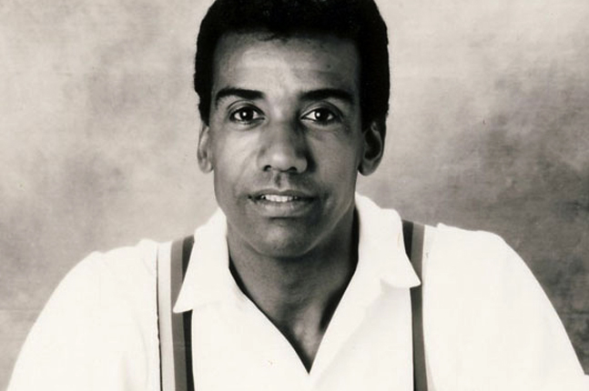
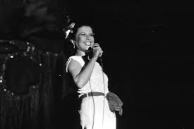
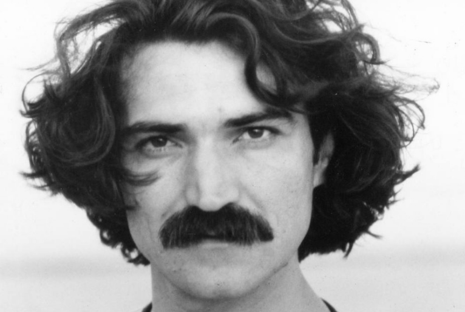
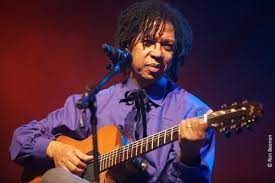

História da MPB:
A Música Popular Brasileira (MPB) surgiu no Brasil na década de 1960, após a Bossa Nova, ganhando força durante a Ditadura Militar. Ela se estabeleceu como um movimento de caráter nacionalista, buscando aliar a sofisticação harmônica a ritmos de raiz, servindo como um importante veículo de crítica e resistência política. Impulsionada pelos Festivais de Música que revelaram nomes como Elis Regina e Chico Buarque, a MPB evoluiu com o surgimento do Tropicalismo (Caetano Veloso e Gilberto Gil), que promoveu uma ousada fusão da música brasileira com a estética pop e o rock internacional. O gênero consolidou-se como um símbolo da canção nacional de qualidade, rica em diversidade e profundidade lírica.
Milton Nascimento é um cantor e compositor mineiro, destaque da MPB e do movimento Clube da Esquina, conhecido por sua voz única e músicas sobre amor e vida.
Chico Buarque é cantor, compositor e escritor carioca, conhecido por suas letras poéticas e críticas sociais, sendo um dos maiores nomes da MPB.
Caetano Veloso é cantor, compositor e um dos criadores da Tropicália, conhecido por inovar a música brasileira com poesia e mistura de ritmos.
Jorge Ben Jor é cantor e compositor carioca, conhecido por misturar samba, funk e rock, criando um som único e marcante na música brasileira.

Gilberto Gil é cantor, compositor e um dos líderes da Tropicália, conhecido por unir música brasileira, reggae e ritmos africanos com letras criativas e engajadas.
Cantora gaúcha de voz poderosa e intensa, foi um dos maiores nomes da MPB, conhecida por sua emoção e interpretações marcantes.
Cantor e compositor cearense, destacou-se por letras poéticas e reflexivas sobre a juventude, o tempo e a sociedade brasileira.
Djavan é cantor e compositor alagoano, conhecido por suas melodias sofisticadas e por misturar MPB, jazz e música pop com letras poéticas.